Los gráficos permiten representar los datos de forma visual para facilitar la interpretación de los resultados. En SPSS se pueden elaborar distintos tipos de gráficos, entre los más utilizados se encuentran:
● Gráfico de pastel (torta)
● Gráfico de barras
● Gráfico de barras agrupado
● Gráfico de dispersión Todos los gráficos se crean desde el menú Gráficos.
El gráfico de pastel se utiliza para representar variables categóricas como género, edad, carrera o preferencia. Pasos para crear un gráfico de pastel
1. Abrir la base de datos en SPSS.
2. En la barra superior hacer clic en: Gráficos
3. Colocar el cursor sobre: Cuadros de diálogo antiguos
4. Dar clic en: Circular
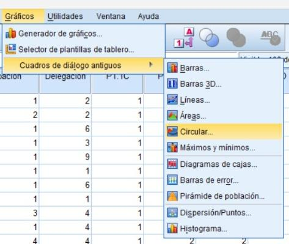
5. Aparecerá la ventana Gráficos circulares. Seleccionar la opción: Resúmenes para grupos de casos
6. Dar clic en: Definir
7. Aparecerá una nueva ventana.
- Buscar la variable que se desea graficar
8. Seleccionar la variable y dar clic en la flecha para enviarla a: Definir porciones por
9. Para agregar título dar clic en: Títulos
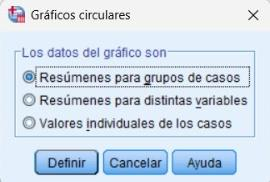
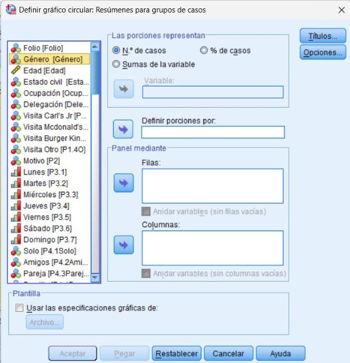
10. Escribir el título del gráfico
- Ejemplo: Distribución por género
11. Dar clic en: Continuar
12. Dar clic en: Aceptar.
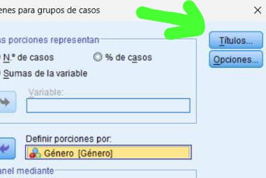
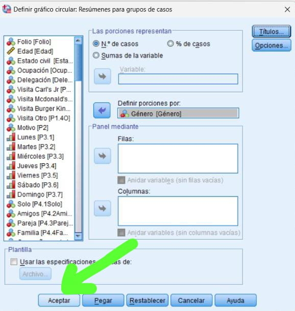
13. SPSS generará automáticamente el gráfico.
14. Al darle doble clic al gráfico, se abrirá una nueva ventana donde se podrá modificar colores, formas, textos, etc. del gráfico, además de encontrar otras funciones para mejorarlo.
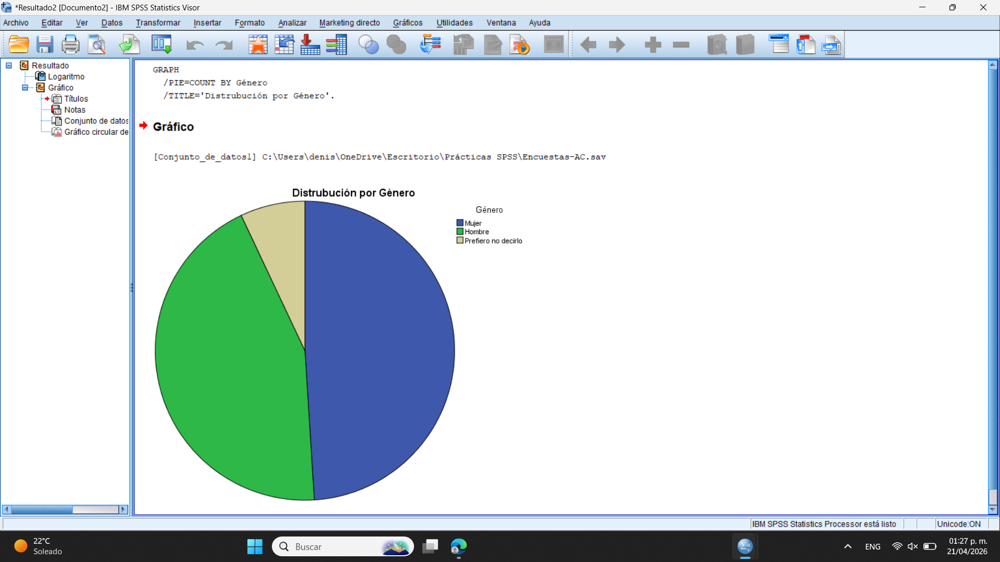
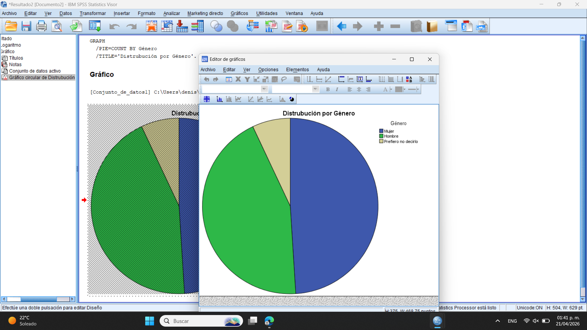
Muestra el porcentaje de cada categoría. La porción más grande indica la opción con mayor frecuencia y las más pequeñas representan menor participación. En este caso, la interpretación sería la siguiente: La mayor proporción corresponde al género femenino, seguida del masculino y una pequeña parte que prefirió no decirlo. Esto indica que predominó la participación femenina en la muestra analizada. La interpretación puede ser más acertada si en la modificación de la gráfica se añaden las frecuencias/porcentajes visibles.
El gráfico de barras permite comparar frecuencias entre categorías.
1. Ir al menú: Gráficos
2. Seleccionar: Cuadros de diálogo antiguos
3. Dar clic en: Barras
4. Aparecerá la ventana Gráficos de barras
- Seleccionar: Simples
- Seleccionar también: Resúmenes para grupos de casos
5. Dar clic en: Definir
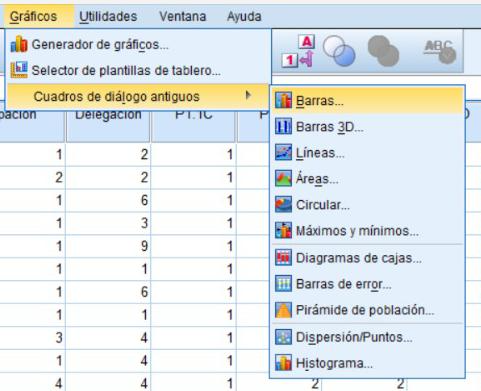
6. Aparecerá una nueva ventana
- Buscar la variable a graficar
7. Seleccionar la variable y enviarla a: Eje de categorías
8. Dar clic en: Títulos
9. Escribir el título - Distribución por edad
10. Dar clic en: Continuar
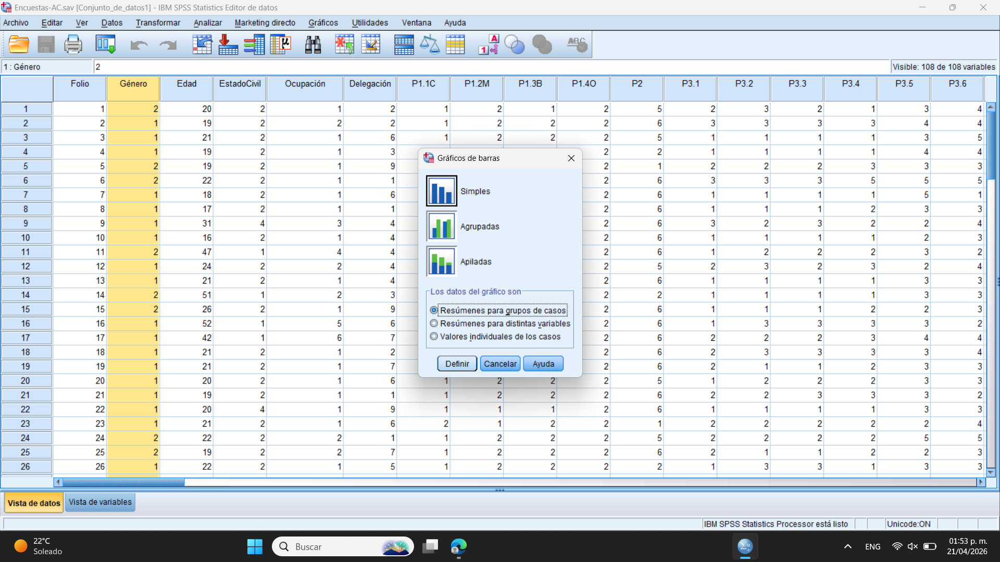
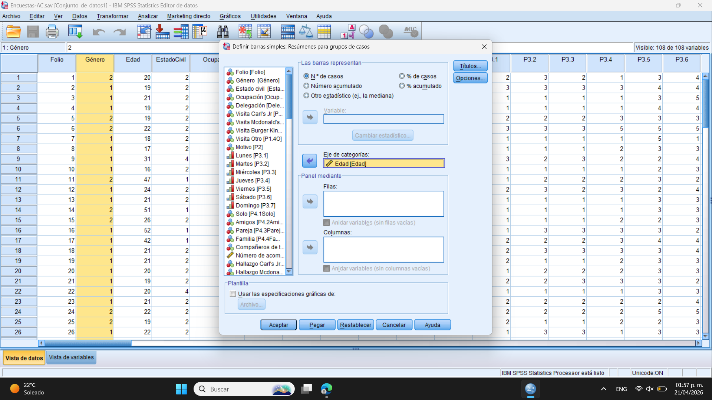
11. Dar clic en: Aceptar
12. SPSS mostrará el gráfico.
13. Al darle doble clic al gráfico, se abrirá una nueva ventana donde se podrá modificar colores, formas, textos, etc. del gráfico, además de encontrar otras funciones para mejorarlo.
Permite comparar categorías. La barra más alta indica la mayor frecuencia y la más baja la menor. En este caso, la interpretación sería la siguiente: La mayor frecuencia se presenta entre los 18 y 22 años, mientras que en edades mayores la frecuencia disminuye. Esto indica que la mayoría de los participantes pertenecen a edades jóvenes.
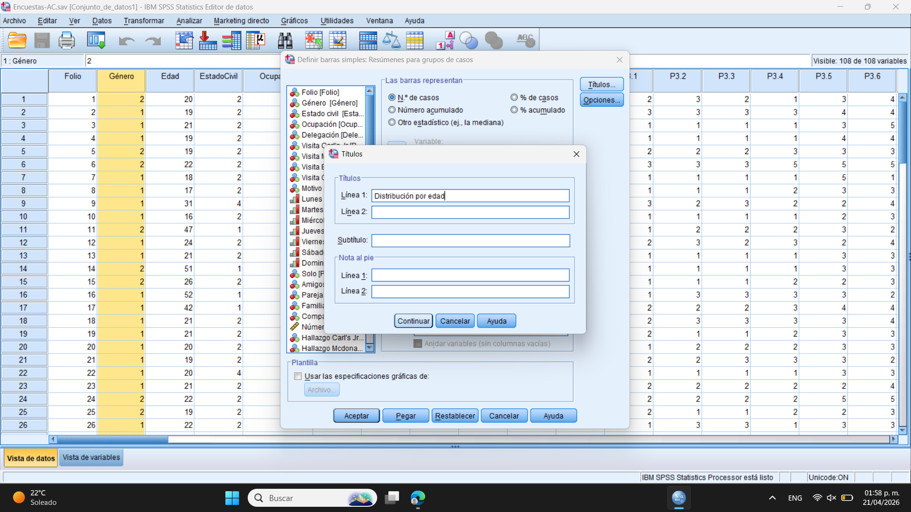
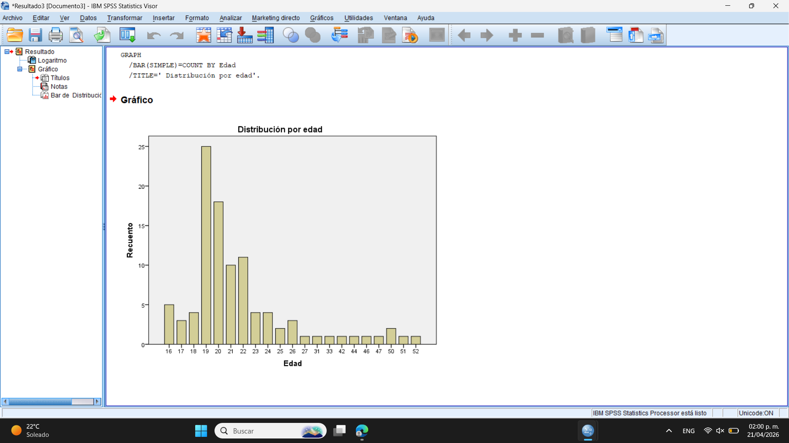
La interpretación puede ser más acertada si en la modificación de la gráfica se añaden las frecuencias/porcentajes visibles.
Este gráfico permite comparar dos variables al mismo tiempo. Ejemplo: Edad según sexo
1. Ir a: Gráficos
2. Seleccionar: Cuadros de diálogo antiguos
3. Dar clic en: Barras
4. Aparecerá la ventana Gráficos de barras
- Seleccionar: Agrupadas
- Seleccionar también: Resúmenes para grupos de casos
5. Dar clic en: Definir
6. En la nueva ventana:
- Enviar la variable principal a: Eje de categorías
- Enviar la segunda variable a:
- Definir grupos por
8. Dar clic en: Títulos
9. Escribir: Edad según género
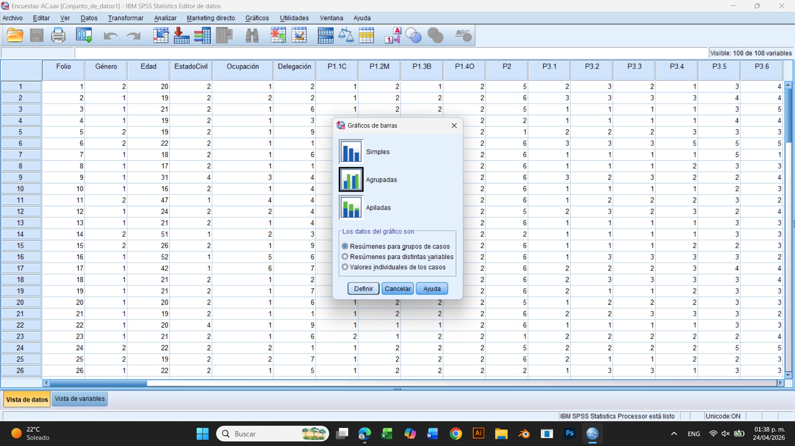
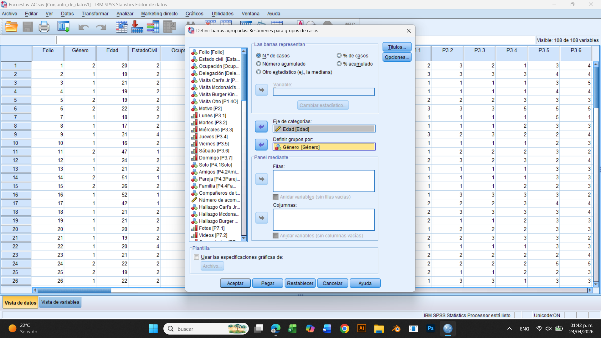
10. Dar clic en: Continuar
11. Dar clic en: Aceptar
12. SPSS generará el gráfico agrupado.
14. Al darle doble clic al gráfico, se abrirá una nueva ventana donde se podrá modificar colores, formas, textos, etc. del gráfico, además de encontrar otras funciones para mejorarlo.
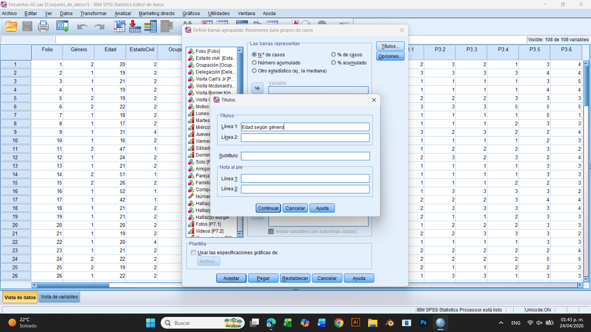
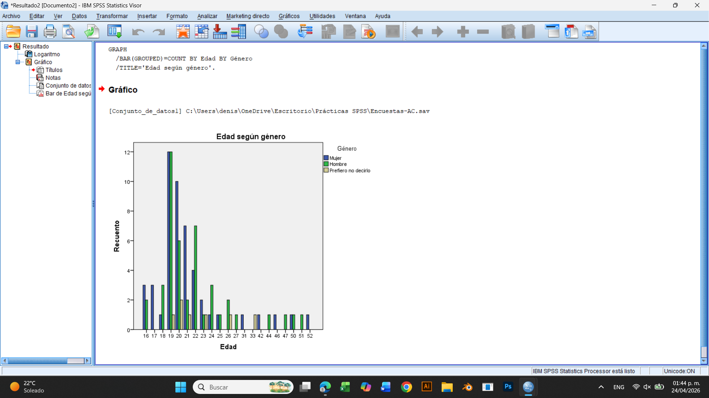
Permite comparar dos variables. Las barras dentro de cada grupo muestran cuál categoría tiene mayor o menor frecuencia. En este caso, la interpretación sería la siguiente: La mayor frecuencia se concentra entre los 18 y 22 años en ambos géneros. En edades mayores la frecuencia disminuye. Esto indica que la muestra está compuesta principalmente por participantes jóvenes y no se observan diferencias importantes entre género. La interpretación puede ser más acertada si en la modificación de la gráfica se añaden las frecuencias/porcentajes visibles.
Se utiliza para observar la relación entre dos variables numéricas. Ejemplo: Edad y último gasto
1. Ir a: Gráficos
2. Seleccionar: Cuadros de diálogo antiguos
3. Dar clic en: Dispersión / puntos
4. Seleccionar: Dispersión simple
5. Dar clic en: Definir
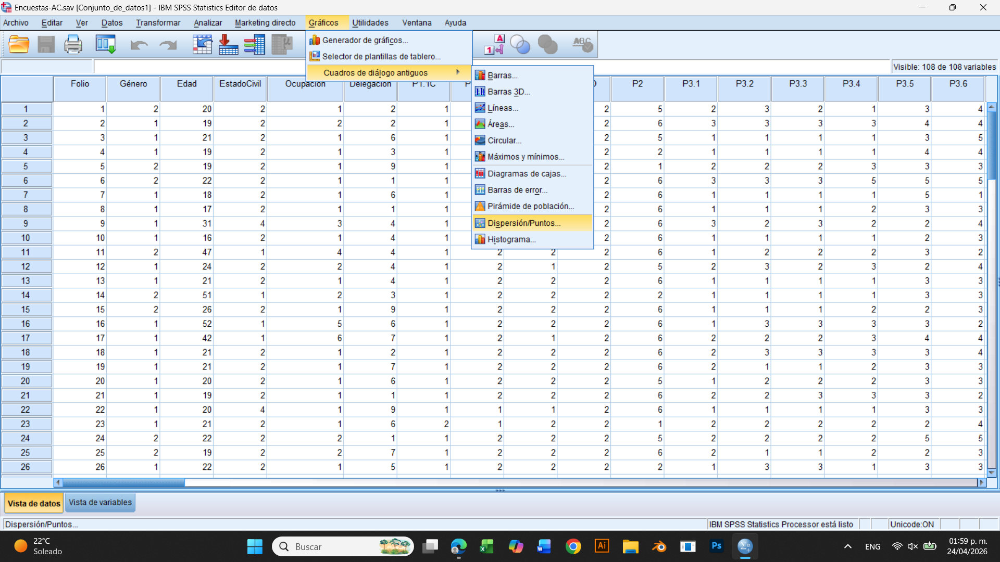
6. En la nueva ventana:
- Enviar variable 1 a: Eje X
- Enviar variable 2 a: Eje Y Ejemplo: Último gasto
- Dar clic en: Títulos
7. En la nueva ventana:
- Escribir: Relación entre edad y último gasto
8. Dar clic en: Continuar
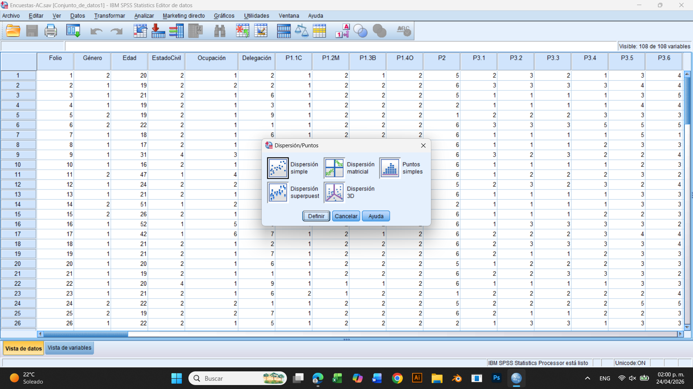
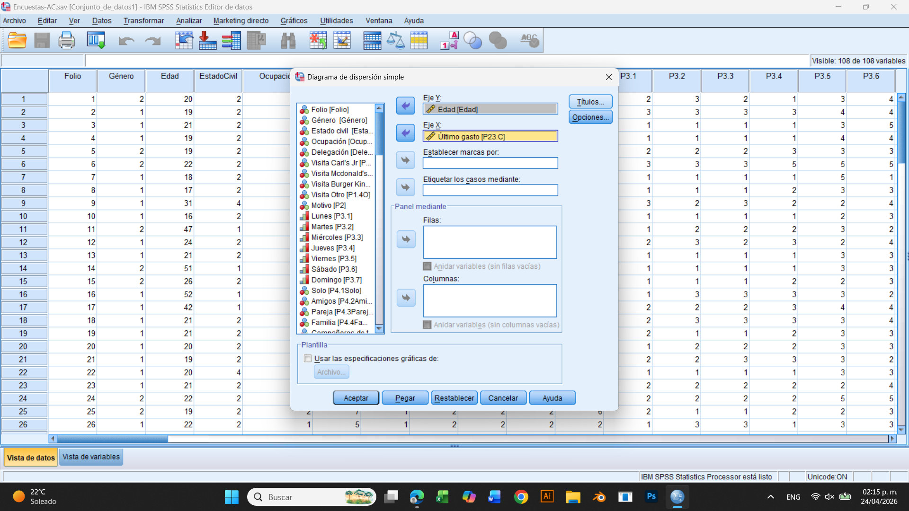
9. Dar clic en: Aceptar
10. SPSS mostrará el gráfico.
11. Al darle doble clic al gráfico, se abrirá una nueva ventana donde se podrá modificar colores, formas, textos, etc. del gráfico, además de encontrar otras funciones para mejorarlo.
Muestra la relación entre dos variables. Si los puntos suben hay relación positiva, si bajan es negativa y si están dispersos no hay relación. En este caso la interpretación sería la siguiente: Los puntos se encuentran dispersos y no siguen una tendencia definida, por lo que no se observa una relación positiva ni negativa entre la edad y el último gasto. Esto indica que la edad no influye en la cantidad del último gasto realizado.
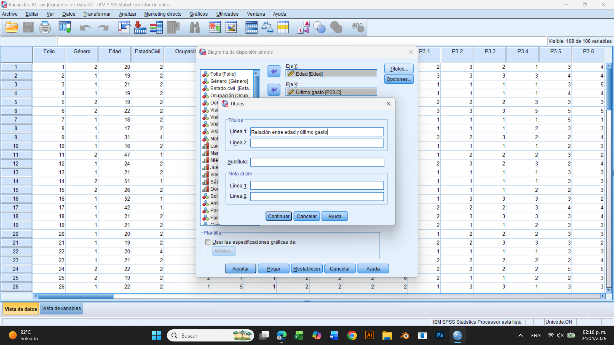
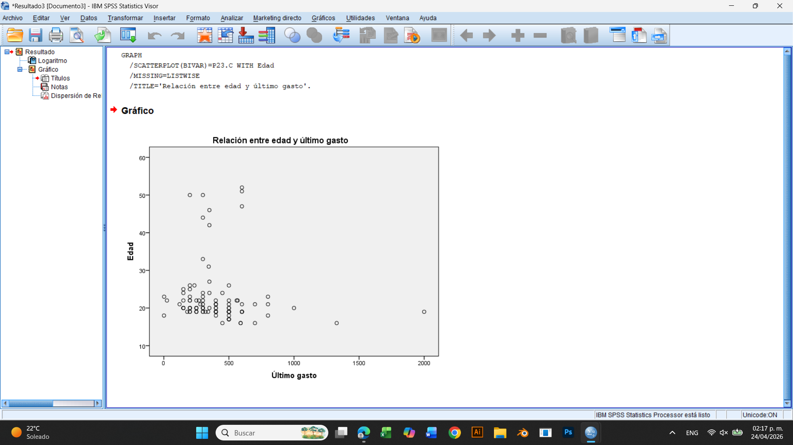